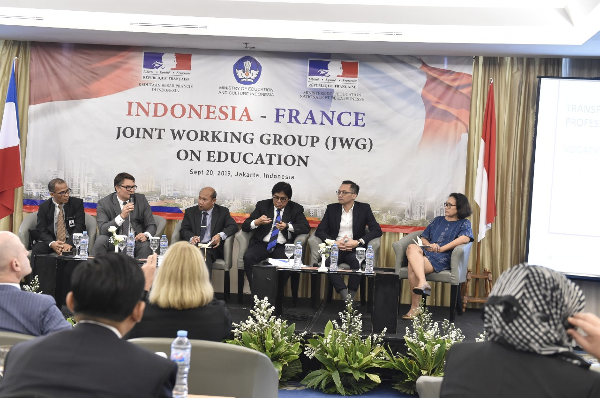
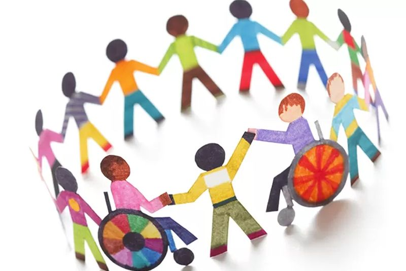
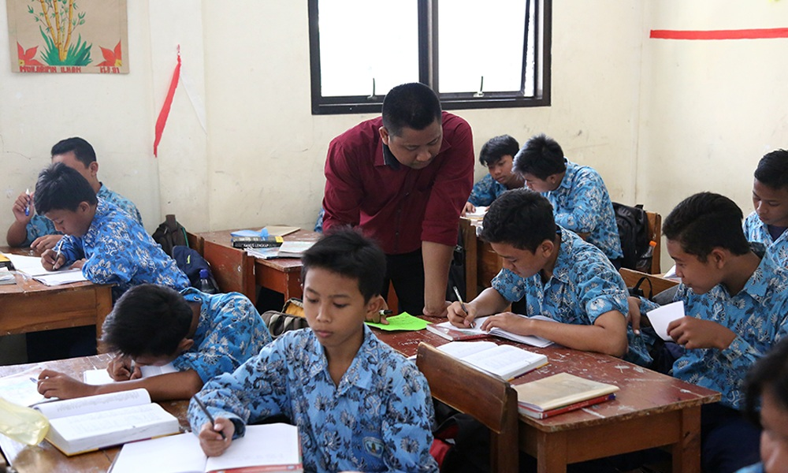

Hubungan dengan SDGS
Kerjasama Internasional dalam Pendidikan 👩🏫🤝

Pelaksanaan SDGs di Indonesia dilakukan sejalan dengan perencanaan pembangunan nasional. Maka pemerintah mengintegrasikan target-target SDGs pada dokumen perencanaan pembangunan supaya tujuan utama pemerintah tercapai. Pelaksanaan SDGs saat ini telah memasuki Decade of Action, yang menjadi peran penting dan tanggung jawab bagi seluruh masyarakat bukan hanya pemerintah. Prinsip partisipatif ini menjadi kunci kolaborasi nyata di tengah tantangan yang ada di zaman sekarang. Komitmen Pemerintah Indonesia menunjukkan komitmen untuk mengakselerasikan pencapaian SDGs seperti yang tercermin pada Peraturan Presiden Nomor 111 Tahun 2022.
Pendidikan yang Inklusif 🏫👩🎓

Pendirian sekolah-sekolah bernama Indonesia di Meksiko menunjukkan komitmen dari kedua negara untuk memberikan akses pendidikan yang merata bagi semua anak, termasuk anak dari Indonesia yang bermigrasi di Meksiko. Dengan mendirikan sekolah yang mencerminkan persatuan kedua negara yang kuat untuk menyediakan akses pendidikan yang berkualitas dan adil, tetapi juga menggambarkan perpaduan antara dua budaya.
Meningkatkan Kualitas Pembelajaran 📈📖

Program pelatihan seni dan budaya yang telah disepakati kedua belah pihak, serta pengiriman guru BIPA menunjukkan kepedulian Indonesia untuk memperkenalkan budaya seni Indonesia ke kancah internasional, juga Meksiko yang selalu terbuka menantikan perpaduan budaya yang inklusif. Kesepakatan ini adalah awal untuk meningkatkan kualitas pembelajaran di sekolah-sekolah Meksiko. Kegiatan ini membantu siswa-siswi mengenal lebih dalam identitas dan budaya Indonesia, serta menambah wawasan mereka.